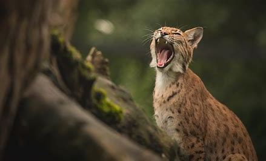
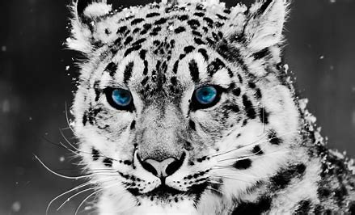

A Pantherinae é uma subfamília de mamíferos carnívoros da família dos felídeos. Os animais desta subfamília diferenciam-se por terem o hioide pouco calcificado e a parte inferior constituída por um tendão elástico, o que lhes permite rugir.
Surgiu da famíla Felinae entre 6 a 10 milhões de anos atrás.
| Felinae | Visão Geral |
|---|---|
|  |  |